용접기사 (2009-03-01 기출문제)
1과목: 기계제작법
1. 연삭 숫돌과 관련된 용어의 설명으로 틀린 것은?
- Loading : 칩과 마모된 입자가 경사면과 여유면 사이를 메우는 눈 메움 현상으로, 진동이 생기기 쉬우므로 다듬면이 나빠지고 숫돌의 마모가 촉진된다.
- Glazing : 입자가 무디어져 매끈한 상태가 되었을때 가공된 면의 표면 거칠기가 좋아진다.
- Dressing : 숫돌표면의 입자, 결합제, 이물질 등을 탈락시켜 절삭작용을 원활하게 한다.
- truing : 숫돌의 연삭면을 숫돌 축에 대하여 평행 또는 일정한 형태로 성형 시켜 주는 방법
(정답률: 70%)

2. 드릴지그 구성의 3대 요소에 해당되지 않는 것은?
- 위치 결정 장치
- 클램프 장치
- 공구 안내 장치
- 측정 장치
(정답률: 58%)
3. 표면경화법 중 질화법의 특징 설명으로 틀린 것은?
- 마모 및 부식에 대한 저항이 크다.
- 변형이 작다.
- 당금질 할 필요가 없다.
- 경화층이 두껍다.
(정답률: 67%)
4. 용접재를 서로 맞대어 가압하면서 전류를 통하면 용접부는 접촉 저항에 의해서 발열이 되어 용접부가 단접 온도에 도달하였을 때 축방향으로 큰 압력을 주어 용접하는 방법은?
- 퍼커션 용접(percussion welding)
- 업셋 용접(upset welding)
- 프로젝션 용접(projection welding)
- 심 용접(seam welding)
(정답률: 59%)
5. 스핀들과 앤빌의 측정면이 뽀족한 마이크로미터로서 드릴의 웨브(web), 수나사의 골지름 측정에 주로 사용되는 마이크로미터는?
- 외측 마이크로미터
- 깊이 마이크로미터
- 포인트 마이크로미터
- 지시 마이크로미터
(정답률: 40%)
6. 입도가 작고 연한 숫돌을 작은 압력으로 공작물 표면에 가압하면서 공작물에 이송을 주고 또 숫돌을 좌우로 진동시키면서 가공하는 방법은?
- 래핑(Lapping)
- 호닝(Honing)
- 숏 피닝(Shot peening)
- 슈퍼 피니싱(Super finishing)
(정답률: 64%)
7. 특수 가공법 중에서 기계적 에너지만 사용하는 가공법으로 짝지어진 것은?
- 전해가공, 전주가공, 초음파가공
- 롤러다듬질, 버니싱, 숏피닝
- 버니싱, 전주가공, 초음파가공
- 방전가공, 레이저가공, 이온가공
(정답률: 73%)
8. 용융금속을 정밀한 형상의 금형에 주입하여 주물을 주조하는 방법으로 치수의 정밀도가 높고 기계가공을 대부분 생략하는 경우가 있으나, 금형의 선택조건이 까다롭고 비싸므로 대량 생산을 고려해야 하는 주조법은?
- 원심 주조법
- 인베스트먼트법
- 다이캐스팅
- 셀 몰드법
(정답률: 93%)
9. 굽힘선의 길이 300㎜, 판 두께가 3㎜인 연강판을 그림과 같이 90˚ 로 V형 굽힘가공을 하려고 한다. 다이견폭(w)이 판 두께의 8배일 때, 굽힘에 필요한 힘은 약몇 kgf 인가? (단, 상형과 하형이 닿지 않는 자유굽힘으로 하고, 재료의 인장강도는 40kgf/mm2, 조정계수는 1.33 으로 한다.)
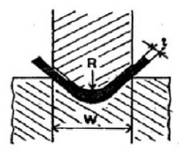
- 1995
- 2155
- 5985
- 1560
(정답률: 46%)
10. 선반용 바이트의 주요 각도 중에서 바이트의 옆면 및 앞면과 가공물과의 마찰을 줄이기 위한 각도는?
- 절삭각
- 여유각
- 경사각
- 가상각
(정답률: 85%)
11. 소성가공에 포함되지 않는 가공법은?
- 단조
- 압연
- 보링
- 압출
(정답률: 69%)
12. 연삭 숫돌에 대한 설명으로 틀린 것은?
- 결합도란 연삭입자를 결합시키는 접착력의 정도를 의미한다.
- 결합도를 경도라고도 하나 입자의 경도와 결합제의 경도와는 무관하다.
- 숫돌의 입자가 숫돌에서 쉽게 탈락될 때 경하다고 하며, 탈락이 어려울 때 연하다고 한다.
- 결합제는 숫돌입자를 결합하여 숫돌의 형상을 갖도록 하는 재료이다.
(정답률: 80%)
13. 사인바에 대한 설명 중 틀린 것은?
- 45° 를 초과하여 측정할 때, 오차가 급격히 커진다.
- 사인바는 삼각함수를 이용하여 각도 측정을 한다.
- 하이트 게이지와 함께 사용해 오차를 보정할 수 있다.
- 호칭치수는 양 롤러간의 중심거리로 나타낸다.
(정답률: 67%)
14. 4개의 조가 단독으로 이동하며, 고정력이 크고, 불규칙한 가공물, 편심된 가공물 등을 정밀하게 고정할수 있는 척은?
- 마그네틱 척(magnetic chuck)
- 콜릿 척(collet chuck)
- 단동 척(independent chuck)
- 연동 척(universal chuck)
(정답률: 50%)
15. 판 두께 5mm인 연강 판에 직경 10mm의 구멍을 프레스로 블랭킹(blanking)하려고 한다. 이때 프레스의 평균속도 7m/min, 재료의 전단강도 300 N/mm2, 기계의 효율 80%일 때 총소요동력(Pt)은 약 몇 kW 인가?
- 5.5
- 6.9
- 26.9
- 412.2
(정답률: 31%)
16. 절삭유제를 사용하는 목적이 아닌 것은?
- 공작물과 공구의 냉각
- 공구 윗면과 칩 사이의 마찰계수 증대
- 능률적인 칩 제거
- 절삭열에 의한 정밀도 저하 방지
(정답률: 67%)
17. TTT선도에서 Mf 점과 Ms점 사이 (100~200℃ 정도)에서 담금질을 하여 항온변태를 행하는 방법은?
- 오스템퍼링(austempering)
- 마템퍼링(martempering)
- 마퀀칭(marquenching)
- 계단 담금질(interrupted quenching)
(정답률: 62%)
18. 용접부에 생기는 잔류응력을 없애려면 다음 중 어떻게 하는 것이 가장 적합한가?
- 담금질을 한다.
- 뜨임을 한다.
- 불림을 한다.
- 풀림을 한다.
(정답률: 67%)
19. 제관 가공에서 이음매 없는 관을 가공하는 방법 중 독일에서 발명된 가공법으로 2 개의 롤이 수평면에 대하여 9~12° 각도로 서로 반대 방향으로 경사진 롤을 사용하는 가공법은?
- 플러그밀법
- 스티펠 천공법
- 에르하르트법
- 만네스만 천공법
(정답률: 82%)
20. 고에너지속도 성형법(high energy rate forming)에 해당하지 않는 것은?
- 폭발 성형법(explosive forming)
- 액중방전 성형법(electro-hydraulic forming)
- 하이드로포밍 성형법(hydroforming)
- 자기 성형법(magnetic pulse forming)
(정답률: 53%)
2과목: 재료역학
21. 그림과 같이 두 개의 물체가 도르래에 의하여 연결 되었을 때 평형을 이루기 위한 힘 P는 몇 kN 인가? (단, 경사면과 도르래의 마찰은 무시한다.)
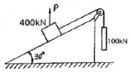
- 200
- 250
- 300
- 350
(정답률: 57%)
22. 어떤 평면상에 작용되는 수직 응력과 전단 응력이 σχ = -50 MPa, σy = 10 MPa, τχy = -40 MPa 이 다. 이 평면에 작동되는 최대 주응력은 몇 MPa 인가?
- 70
- 50
- 30
- 20
(정답률: 28%)
23. 그림과 같은 단붙이 봉에 인장하중 P가 작용할 때, 축의 지름을 d1 : d2 = 3 : 2로 하면 d1의 편에 발생하는 응력 σ1과 d2의 편에 발생하는 응력 σ2 의 비는?
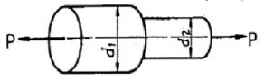
- σ1 : σ2 = 6 : 4
- σ1 : σ2 = 4 : 6
- σ1 : σ2 = 9 : 4
- σ1 : σ2 = 4 : 9
(정답률: 50%)
24. 한 변의 길이가 8 cm인 정사각형 단면의 봉이 있다. 온도를 20℃ 상승시켜도 길이가 늘어나지 않도록 하는데 280 kN의 힘이 필요하다. 이 봉의 선팽창계수(/℃)는? (단, 봉의 탄성계수 E = 210 GPa 이다.)
- 9.63 × 10-6
- 10.42 × 10-6
- 11.23 × 10-6
- 11.82 × 10-6
(정답률: 58%)
25. 안지름이 80 mm, 바깥지름이 90 mm이고 길이가 4 m인 좌굴 하중을 받는 파이프 압축 부재의 세장비는 얼마 정도인가?
- 93
- 103
- 123
- 133
(정답률: 55%)
26. 길이가 60 cm이고 폭(b) 2 cm, 높이(h) 3 cm인 직사각형 단면의 외팔보 자유단에 1kN의 집중 하중이 작용할 때 최대 굽힘 응력은 약 몇 MPa 인가?
- 250
- 200
- 150
- 100
(정답률: 19%)
27. 지름 10 mm 이고, 길이가 3 m인 원형 축이 716rpm으로 회전하고 있다. 이 축의 허용 전단응력이 160 MPa인 경우 전달 할 수 있는 최대 동력은 약 몇 kW 인가?
- 2.35
- 3.15
- 6.28
- 9.42
(정답률: 17%)
28. 그림과 같은 균일분포하중 ω kN/m 를 받는 단순보에서 중앙점의 처짐을 0으로 하고자 할 때, 아래에서 위로 받쳐주어야 하는 힘 P는? (단, 보의 굽힘 강성 EI는 일정하고, 자중은 무시한다.)
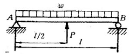
- wℓ
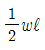
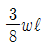
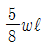
(정답률: 47%)
29. 왼쪽이 고정단인 길이 ℓ 의 외팔보가 ω의 균일 분포하중을 받을 때, 굽힘모멘트 선도(BMD)의 모양은?
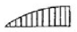
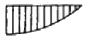
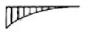
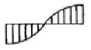
(정답률: 47%)
30. 그림과 같은 일단 고정 타단지지 보에 등분포 하중 ω가 작용하고 있다. 이 경우 반력 RA 와 RB는? (단, 보의 굽힘강성 EI 는 일정 하다.)
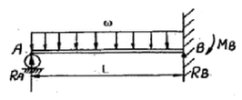
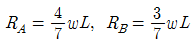
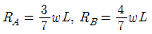
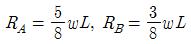
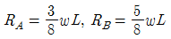
(정답률: 59%)
31. 지름 4 cm인 균일단면봉이 인장하중을 받고 인장응력 750 MPa 이 생겼을 때, 지름은 약 몇 mm 줄어드는가? (단, 포아송비는 0.3, 탄성계수는 200GPa 이다.)
- 0.45
- 0.37
- 0.045
- 0.037
(정답률: 28%)
32. 그림과 같은 외팔보에 있어서 고정단에서 20㎝ 되는 점의 굽힘모멘트 M은 몇 kN.m 인가?
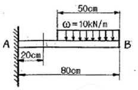
- 1.6
- 1.75
- 2.2
- 2.75
(정답률: 34%)
33. 단면 치수가 8㎜ × 24㎜인 강대가 인장력 P =15 kN을 받고 있다. 그림과 같이 30° 경사진 면에 작용하는 전단 응력은 약 몇 MPa 인가?
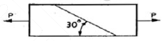
- 19.5
- 29.3
- 33.8
- 67.6
(정답률: 50%)
34. 그림에서 빗금 친 부분의 도심을 구한 것은? (단, 곡선의 방정식은 y3 = 2x이고, x 와 y는 cm 단위이다.)
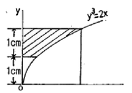
- x = 1.210, y = 1.653
- x = 1.284, y = 1.724
- x = 1.3⑤, y = 1.983
- x = 1.423, y = 1.724
(정답률: 54%)
35. 직경이 1.5 m, 두께가 3 mm인 원통형 강재 용기의 최대 사용강도가 240 MPa 일 때 지탱할 수 있는 한계압력은 몇 kPa 인가? (단, 안전계수는 2 이다.)
- 240
- 480
- 720
- 960
(정답률: 72%)
36. 다음과 같은 균일 단면보가 순수 굽힘 작용을 받을때 이 보에 저장된 탄성 변형에너지는?
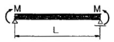
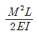
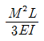
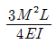
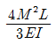
(정답률: 67%)
37. 다음 그림과 같은 구조물에서 비틀림각 Θ는 약몇 rad 인가? (단, 봉의 전단탄성계수 G = 120 GPa 이다.)
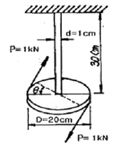
- 0.12
- 0.5
- 0.⑤
- 0.032
(정답률: 50%)
38. 그림과 같은 외팔보가 집중 하중 P를 받고 있을때, 자유단에서의 처짐 δA 는? (단, 보의 굽힘 강성 E I 는 일정하고, 자중은 무시한다.)
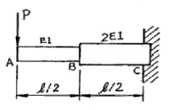
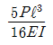
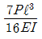
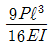
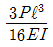
(정답률: 46%)
39. 동일 재료로 만든 길이 L, 지름 d인 축과 길이 2L, 지름 2d인 축을 동일 각도만큼 비트는데 필요한 비틀림 모멘트의 비 T1 / T2 의 값은 얼마인가?
- 1/12
- 1/10
- 1/8
- 1/6
(정답률: 77%)
40. 막대의 한 끝이 고정되고 다른 끝에 집중 하중이 작용할 때, 막대의 양단에서 국부변형이 발생하고 양단에서 멀어질수록 그 효과가 감소 된다는 사실과 관계있는 것은?
- 카스틸리아노(Castigliano)의 정리
- 상베낭(Saint-Venant)의 원리
- 트레스카(Tresca)의 원리
- 맥스웰(Maxwell)의 정리
(정답률: 알수없음)
3과목: 용접야금
41. 아공석강은 상온에서 어떤 혼합조직을 갖는가?
- 펄라이트와 페라이트
- 오스테나이트와 시멘타이트
- 베이나이트와 페라이트
- 펄라이트와 시멘타이트
(정답률: 43%)
42. 담금질한 철강을 A1 변태점 이하의 일정 온도로 가열하여 인성을 증가시킬 목적으로 하는 열처리는?
- 퀜칭(quenching)
- 템퍼링(Tempering)
- 어닐링(Annealing)
- 노말라이징(Normalizing)
(정답률: 62%)
43. 연강용 피복아크 용접봉의 심선 재료로 가장 적합한 것은?
- 합금강
- 고탄소 킬드강
- 저탄소 림드강
- 특수강
(정답률: 77%)
44. 금속재료를 연화시키며, 조직의 균일화, 미세화, 표준화를 목적으로 그 성질을 개선하기 위해 일정 온도에서 일정시간 가열 후 비교적 느린 속도로 냉각시키는 열처리는?
- 담금질
- 풀림
- 침탄
- 표면경화
(정답률: 알수없음)
45. 피복 아크 용접봉에서 피복제의 역할로 틀린 것은?
- 아크의 안정
- 용착금속의 경화
- 용착금속보호
- 필요한 합금원소 첨가
(정답률: 75%)
46. 용접 열 영향부의 열 사이클에서 중요한 인자가 아닌 것은?
- 가열속도
- 최저도달(가열)온도
- 냉각속도
- 최고가열온도에서의 유지시간
(정답률: 64%)
47. 주철에 첨가되어 흑연화를 촉진하는 원소는?
- Cr
- Mo
- W
- Si
(정답률: 46%)
48. 연강용 피복아크용접봉의 종류 중 E4324의 피복제 계통은?
- 라임티타니아계
- 고셀룰로오스계
- 철분산화티탄계
- 철분산화철계
(정답률: 55%)
49. 연강용 피복아크 용접봉의 피복제 성분 중 합금제에 해당하지 않는 것은?
- Mn
- Al
- Cr
- Ni
(정답률: 43%)
50. 청열취성에 가장 큰 영향을 미치는 것은?
- 질소
- 수소
- 산소
- 황
(정답률: 알수없음)
51. 탄소강 중에서 적열취성의 원인이 되는 원소는?
- P
- S
- Si
- Mn
(정답률: 82%)
52. 용접부의 용접금속에 대한 설명으로 맞는 것은?
- 용가재에서 용융된 금속립은 용융된 모재와 용융지를 만들어 화학반응 없이 응고한다.
- 용접금속이 응고할 경우 용융지 표면에서 용융지속으로 주상정이 발달한다.
- 주상정이 나타나면 결정립이 조대화하여 인장강도가 증가한다.
- 다층용접은 전층이 다음 층의 용접으로 인하여 주조 조직이 미세한 조직이 된다.
(정답률: 43%)
53. 다음 열전대 중 가장 낮은 온도에서 사용하는 것은?
- 백금 - 백금 로듐
- 구리 - 콘스탄탄
- 철 - 콘스탄탄
- 크로멜 - 알루멜
(정답률: 80%)
54. 체심 입방격자(BCC)에 속하는 금속은?
- Au
- Al
- Cu
- Mo
(정답률: 32%)
55. 용접부의 현미경 조직과 기계적 성질이 현저하게 변화하는 영역으로 취성이 가장 큰 부분은?
- 용착금속
- 주조부
- 열영향부
- 모재
(정답률: 79%)
56. 탄소 당량을 설명한 것으로 옳은 것은?
- 강재의 망간(Mn)과 규소(Si)의 비를 나타낸다.
- 강재의 용접성과 관계가 있으며 이 값이 클수록 용접이 곤란하다.
- 보통 연강재의 탄소 당량은 0.1~0.25% 정도이다.
- 주철의 흑연 함유량을 나타낸 것이다.
(정답률: 58%)
57. 용접 입열량에 영향을 주지 않는 것은?
- 아크전압
- 아크전류
- 용접봉 지름
- 용접속도
(정답률: 73%)
58. 용접균열 중 고온균열의 종류가 아닌 것은?
- 설퍼 균열
- 병배 균열
- 비드 밑 균열
- 크레이터 균열
(정답률: 20%)
59. 다음 중 비중이 작은 것에서 큰 순서대로 나열된것은?
- 알루미늄 - 주석 - 구리 - 납
- 주석 - 구리 - 납 - 알루미늄
- 구리 - 납 - 알루미늄 - 주석
- 납 - 구리 - 주석 - 알루미늄
(정답률: 82%)
60. 고온균열에 관한 설명으로 옳은 것은?
- 응고 직후 입계에 있는 고융점의 불순물이 원인이다.
- 탄소, 규소, 인의 첨가로 고온 균열을 방지할 수있다.
- 니켈은 황화니켈을 생성하여 고온균열을 감소시킨다.
- 망간은 유화철(황화철, FeS)을 감소시켜 고온균열을 감소시킨다.
(정답률: 75%)
4과목: 용접구조설계
61. 용접시공설계에 대한 설명으로 알맞은 것은?
- 판재가 두꺼운 용접에서는 X형 홈보다는 V형 홈을 이용하는 것이 좋다.
- 단속필릿 용접 이음의 경우 목길이(다리길이)를 크게하고 용접길이를 짧게 하는 것이 좋다.
- 용착금속량이 많이 드는 이음 모양이 되도록 설계한다.
- 용접이음에 걸리는 하중이 작거나 없을 때는 연속필릿 용접이음보다 단속필릿 용접이음이 비용이 절감된다.
(정답률: 59%)
62. 강판의 두께 12mm, 용접부 길이 200mm를 V 홈으로 맞대기 용접 이음을 할 때 인장력(kgf)은 얼마까지 허용할 수 있는가? (단, 용접부 이음 효율은 85%, 강판의 최대인장강도는 45kgf/mm2, 안전계수는 3 이고, 용접부는 불용착부가 존재하지 않는 완전 용접부로 한다.)
- 8060
- 80600
- 30600
- 3060
(정답률: 알수없음)
63. 반발을 이용하는 경도시험 방법으로 맞는 것은?
- 쇼어 경도시험
- 로크웰 경도시험
- 비커스 경도시험
- 브리넬 경도시험
(정답률: 62%)
64. 초음파 탐상법에서 통상적으로 적용하는 주파수(MHz)로 가장 적합한 것은?
- 0.5 ~ 15
- 15 ~ 25
- 25 ~ 100
- 100 ~ 1000
(정답률: 55%)
65. 용접구조물의 피로강도를 향상시키는 방법으로 틀린 것은?
- 냉간가공 또는 야금적 변태로 기계적 강도를 높일것.
- 가능한 응력 집중부가 용접부가 되도록 할 것.
- 다듬질 등에 의하여 단면이 급변하는 부분을 피할 것.
- 열처리 등의 방법으로 용접부 잔류응력을 완화시킬것.
(정답률: 70%)
66. 용접부의 기본 기호에서 l l l 의 명칭은?
- 가장자리 용접
- 심 용접
- 표면 육성
- 겸침 접합부
(정답률: 75%)
67. 연강 용접에서 정적강도가 큰 것에서 작은 것으로 순서가 맞는 것은?
- 전면필릿(양면덮개판) > 홈용접(맞대기) > 측면필릿
- 전면필릿(양면덮개판) > 측면필릿 > 홈용접(맞대기)
- 측면필릿 > 전면필릿(양면덮개판) > 홈용접(맞대기)
- 홈용접(맞대기) > 전면필릿(양면덮개판) > 측면필릿
(정답률: 67%)
68. 용접 잔류 응력은 강구조물의 중요한 유해 요소가 되고 있는데 이와 가장 관계가 먼 것은?
- 취성파괴
- 피로파괴
- 응력부식
- 선상조직
(정답률: 60%)
69. 용접성을 이음성능과 사용성능으로 구분할 때 이음 성능에 해당하는 것은?
- 모재와 용접금속의 기계적 성질
- 모재와 용접금속의 노치인성
- 용접변형과 잔류응력
- 용접금속의 형상
(정답률: 25%)
70. 필릿 용접부의 용접 비용 계산 방법에서 목길이(다리길이) 10mm의 필릿용접부의 환산계수는 약 얼마인가?
- 1.0
- 1.8
- 2.3
- 2.8
(정답률: 28%)
71. 맞대기 용접이음에서 용접부의 굽힘응력을 구하는 식은? (단, M은 굽힘 모멘트, ℓ은 용접 유효길이, h는 모재의 두께이다.)
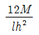
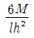
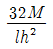
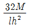
(정답률: 82%)
72. CO2 가스용접에서 비교적 저전류(약 200A 이하)로 용접하는 경우에 발생하며, 모재에 대한 입열이 적고 용입이 얕기 때문에 박판이나 이면비드 용접에 널리 응용되는 용적이행 형태는?
- 스프레이형
- 슬래그형
- 단락형
- 스패터링형
(정답률: 39%)
73. 측면 필릿이음에서 용입을 고려한 용입의 루트부터 필릿 용접의 표면까지의 최단거리를 무엇이라고 하는가?
- 용입 깊이
- 실제 목두께
- 목길이(다리길이)
- 용접루트
(정답률: 67%)
74. 리벳 이음에 비교하여 용접 이음의 특징 설명으로 틀린 것은?
- 수밀, 기밀, 유밀 등이 우수하다.
- 품질검사가 어렵다.
- 응력집중이 생기지 않는다.
- 저온에서 취성 파괴가 일어나기 쉽다.
(정답률: 64%)
75. 융접(fusion welding)에 해당되는 것은?
- 테르밋용접
- 저항용접
- 마찰용접
- 경납땜
(정답률: 50%)
76. 맞대기 이음부에 틈새가 10mm 발생하였을 때 보수 방법으로 가장 적합한 것은?
- 틈새에 라이너(liner)를 삽입하여 용접한다.
- 한쪽 또는 양측에 덧붙이 용접한 다음 깍아내어 용접한다.
- 판두께 6mm 정도 뒷댐판을 대고 용접한다.
- 재료의 일부인 약 300mm 정도를 새로이 바꾼다.
(정답률: 59%)
77. 용접균열 시험법에 해당 되지 않는 것은?
- 리하이형 구속 균열시험
- T형 필릿 균열시험
- 피스코 균열시험
- 카안인열 균열시험
(정답률: 38%)
78. 용접 잔류 응력을 경감하는 방법 중 틀린 것은?
- 용착금속의 양을 많게 한다.
- 적당한 예열을 한다.
- 풀림(annealing)을 한다.
- 적당한 용착법과 용접순서를 선택한다.
(정답률: 73%)
79. 용접예열의 설명으로 틀린 것은?
- 급냉에 의한 경화, 균열이 생기기 쉬운 재료(고탄소강, 주철 등)는 재질에 따라 50 ~ 350℃의 예열을 행한다.
- 연강을 0℃ 이하에서 용접할 경우 이음부의 양쪽폭 100mm 정도를 40 ~ 75℃로 예열하는 것이 좋다.
- 용접부의 냉각속도를 느리게 하여 결함을 방지할수 있다.
- 열전도도가 큰 알루미늄 합금, 구리합금은 예열이 필요없다.
(정답률: 75%)
80. 용접부 검사법의 분류 중 기계적 시험법이 아닌 것은?
- 인장 시험
- 굽힘 시험
- 피로 시험
- 부식 시험
(정답률: 85%)
5과목: 용접일반 및 안전관리
81. 불활성 가스 아크 용접(inert gas arc welding)에 사용하는 가스는?
- 아르곤, 헬륨
- 산소, 네온
- 질소, 헬륨
- 산소, 질소
(정답률: 90%)
82. 압접 방식 중에서 저항용접의 종류가 아닌 것은?
- 방전 충격 용접
- 프로젝션 용접
- 초음파 용접
- 업셋 막대기 용접
(정답률: 55%)
83. 용접 금속과 모재와의 경계는?
- 용착 금속(deposited metal)
- 용가재(filler metal)
- 본드(bond)
- 취화영역(脆化領域)
(정답률: 60%)
84. 용접 후 검사 결과 용접부에 기공이 발생하였다. 기공의 발생원인으로서 적당한 것은?
- 이음부에 페인트가 묻어 아세틸렌-산소 불꽃으로 태워 없애고 용접하였다.
- 장마철에 습기가 많이 있는 용접봉을 잘 건조하여 사용하였다.
- 용접 전류를 높게 하고 용접 속도를 빨리하여 용접 하였다.
- 저수소계 용접봉을 사용하여 충분한 열량을 주어 용접하였다.
(정답률: 75%)
85. 가스 절단 속도에 대한 설명으로 틀린 것은?
- 모재의 온도가 높을 수록 고속 절단이 가능하다.
- 절단 산소 소비량이 많을수록 정비례하여 증가한다.
- 다이버전트 노즐은 고속분출을 얻는 데 적합하다.
- 절단 산소의 압력은 크게 영향이 없다.
(정답률: 72%)
86. 용접기의 1차 측에는 안전스위치와 퓨즈를 설치하여야 하는데, 용접기가 27kVA 이고 1차 입력전압이 300V 일 때 퓨즈 용량은?
- 50A
- 70A
- 90A
- 100A
(정답률: 80%)
87. 용접부 시험방법 중 용접성 시험의 종류가 아닌 것은?
- 용접경화성시험
- 용접연성시험
- 설퍼프린트시험
- 용접균열시험
(정답률: 85%)
88. 교류 아크 용접기에서 가동철심형의 특징 설명으로 틀린 것은?
- 가동철심으로 누설 자속을 가감하여 전류를 조정한다.
- 광범위한 전류조정이 쉽다.
- 미세 전류조정이 가능하다.
- 중간 이상 가동철심을 빼내면 누설자속의 영향으로 아크가 불안정되기 쉽다.
(정답률: 62%)
89. 10-4 ~ 10-6 mmHg 정도의 고 진공에서 수행되는 용접법은?
- 전자 빔 용접
- 초음파 용접
- 플래시 버트 용접
- 일렉트로 슬래그 용접
(정답률: 72%)
90. 가스용접봉의 선택시 주의사항이 아닌 것은?
- 가능한 한 모재와 같은 재질일 것
- 용접봉의 재질 중에는 불순물을 포함하고 있지 않을 것
- 모재에 충분한 취성을 줄 수 있을 것.
- 기계적 성질에 나쁜 영향을 주지 않을 것.
(정답률: 84%)
91. 용접봉의 피복제 중 산화티탄(TiO2)을 약 35% 정도포함한 용접봉으로서 슬래그 생성계이며 아크는 안정되며 스패터가 적고 슬래그의 박리성도 대단히 좋아 비드(Bead) 표면이 고우며 작업성이 우수한 것은?
- E4311
- E4313
- E4316
- E4301
(정답률: 54%)
92. 아세틸렌가스의 사용압력(kgf/cm2)은 얼마 이하가 좋은가?
- 1.0
- 1.5
- 2.0
- 2.5
(정답률: 50%)
93. 저수소계 피복 아크 용접봉의 특성이 아닌 것은?
- 피복재는 석회석이나 형석을 주성분으로 한다.
- 내균열성이 우수하다.
- 아크가 안정하고 용접속도가 빠르다.
- 피복재는 흡습성이 높다.
(정답률: 72%)
94. 피복 아크 용접에서 균열을 방지하기 위한 방법이 아닌 것은?
- 예열을 충분하게 실시한다.
- 저수소계 용접봉을 사용한다.
- 용접봉을 적정하게 건조한다.
- 용접부를 급냉한다.
(정답률: 87%)
95. 피복아크용접봉의 피복제의 역할에 해당되는 것은?
- 탄화성 또는 산화성 분위기로 공기로 인한 산화, 질화 등의 해를 방지하여 스패터를 많게 한다.
- 용착금속에 합금원소를 첨가하며 전기를 잘 통하게 한다.
- 용융점이 높은 무거운 슬래그를 만들며 용적을 크게 한다.
- 탈산정련작용을 하며, 파형이 고운 비드를 만들며 용착금속의 급냉을 방지한다.
(정답률: 85%)
96. 용적(熔滴)이 이행(移行)하는 상태를 분류한 것 중 틀린 것은?
- 피복이행
- 단락이행
- 스프레이이행
- 글로뷸러이행
(정답률: 50%)
97. 피복아크 용접봉의 취급사항으로 틀린 것은?
- 보통(일미나이트계) 용접봉은 70 ~ 100℃에서 30 ~ 60분 정도 건조시켜 사용한다.
- 하중을 받는 상태에서 지면보다 낮은 곳에 보관한다.
- 저수소계 용접봉은 300 ~ 350℃ 에서 1 ~ 2시간 정도 건조시켜 사용한다.
- 용접봉의 보관장소로는 진동이 없고 하중을 받지 않는 장소라야 한다.
(정답률: 74%)
98. 서브머지드 아크 용접의 특징 설명 중 옳은 것은?
- 용입이 얕다.
- 용착금속의 품질이 양호하다.
- 비드 외관이 거칠다.
- 용착속도가 느리다.
(정답률: 77%)
99. 직류 아크 중의 두 극의 전압강하는 주로 무엇에 의하여 정해지는가?
- 무부하 전압
- 재아크 전압
- 플라스마
- 전극의 재질
(정답률: 알수없음)
100. 원판상의 롤러 전극사이에 용접할 2장의 판을 두고 가압 통전하여 전극을 회전시키면서 연속적으로 점 용접을 반복하는 전기저항 용접법은?
- 스터드(stud) 용접
- 업셋(upset) 용접
- 심(seam) 용접
- 플래시 버트(flash butt) 용접
(정답률: 75%)